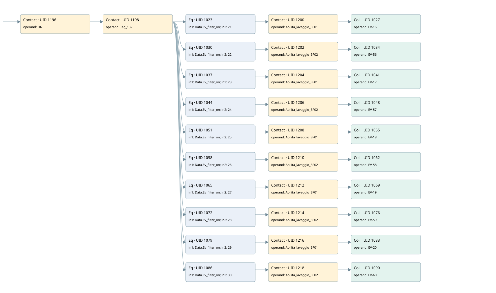

wash filter
filter · 검색 색인 순서 11 · 원본 내부 NID 추정 11
백업 PLF 원본의 2735154 바이트 위치에서 복원한 XML. 검색 문서 1892의 객체 키 161022003811000000000000와 연결했다. 이름 해석 42/42개. 남은 RefId는 상수 또는 미해석 참조다.
연결 구조 다시 그리기
원본 Part/PCon/Wire를 이용한 연결도다. TIA 화면의 래더 배치 또는 실행 결과를 재현한 그림은 아니다. 핀 연결은 아래 표와 원본 XML을 기준으로 읽는다. 노드 위에 마우스를 두면 피연산자 이름을 볼 수 있다.

접점·코일·블록과 피연산자
| Part UID | Gate | Negated 핀 | 연결 피연산자 |
|---|---|---|---|
| 1196 | Contact | operand = ON | |
| 1198 | Contact | operand = Tag_132 | |
| 1023 | Eq | in1 = Data.Ev_filter_on; in2 = 21 | |
| 1200 | Contact | operand = Abilita_lavaggio_BF01 | |
| 1027 | Coil | operand = EV-16 | |
| 1030 | Eq | in1 = Data.Ev_filter_on; in2 = 22 | |
| 1202 | Contact | operand = Abilita_lavaggio_BF02 | |
| 1034 | Coil | operand = EV-56 | |
| 1037 | Eq | in1 = Data.Ev_filter_on; in2 = 23 | |
| 1204 | Contact | operand = Abilita_lavaggio_BF01 | |
| 1041 | Coil | operand = EV-17 | |
| 1044 | Eq | in1 = Data.Ev_filter_on; in2 = 24 | |
| 1206 | Contact | operand = Abilita_lavaggio_BF02 | |
| 1048 | Coil | operand = EV-57 | |
| 1051 | Eq | in1 = Data.Ev_filter_on; in2 = 25 | |
| 1208 | Contact | operand = Abilita_lavaggio_BF01 | |
| 1055 | Coil | operand = EV-18 | |
| 1058 | Eq | in1 = Data.Ev_filter_on; in2 = 26 | |
| 1210 | Contact | operand = Abilita_lavaggio_BF02 | |
| 1062 | Coil | operand = EV-58 | |
| 1065 | Eq | in1 = Data.Ev_filter_on; in2 = 27 | |
| 1212 | Contact | operand = Abilita_lavaggio_BF01 | |
| 1069 | Coil | operand = EV-19 | |
| 1072 | Eq | in1 = Data.Ev_filter_on; in2 = 28 | |
| 1214 | Contact | operand = Abilita_lavaggio_BF02 | |
| 1076 | Coil | operand = EV-59 | |
| 1079 | Eq | in1 = Data.Ev_filter_on; in2 = 29 | |
| 1216 | Contact | operand = Abilita_lavaggio_BF01 | |
| 1083 | Coil | operand = EV-20 | |
| 1086 | Eq | in1 = Data.Ev_filter_on; in2 = 30 | |
| 1218 | Contact | operand = Abilita_lavaggio_BF02 | |
| 1090 | Coil | operand = EV-60 |
접점 경로를 펼친 조건식
Contact·O/A·비교기의 원본 연결을 읽기 쉽게 펼친 보조 해석이다. POWER는 전원 레일 시작을 뜻한다. 호출 블록·에지·타이머의 내부 동작과 다중 쓰기 순서는 이 표로 실행 검증하지 않았다. 미해석 핀과 RefId는 원문 연결표에서 확인한다.
| UID | 동작 | 대상 | 원본 접점 경로 | 내용 |
|---|---|---|---|---|
| 1027 | Coil | EV-16 | (((ON AND Tag_132) AND [Data.Ev_filter_on = 21]) AND Abilita_lavaggio_BF01) | 조건에 따른 Coil 기록 |
| 1034 | Coil | EV-56 | (((ON AND Tag_132) AND [Data.Ev_filter_on = 22]) AND Abilita_lavaggio_BF02) | 조건에 따른 Coil 기록 |
| 1041 | Coil | EV-17 | (((ON AND Tag_132) AND [Data.Ev_filter_on = 23]) AND Abilita_lavaggio_BF01) | 조건에 따른 Coil 기록 |
| 1048 | Coil | EV-57 | (((ON AND Tag_132) AND [Data.Ev_filter_on = 24]) AND Abilita_lavaggio_BF02) | 조건에 따른 Coil 기록 |
| 1055 | Coil | EV-18 | (((ON AND Tag_132) AND [Data.Ev_filter_on = 25]) AND Abilita_lavaggio_BF01) | 조건에 따른 Coil 기록 |
| 1062 | Coil | EV-58 | (((ON AND Tag_132) AND [Data.Ev_filter_on = 26]) AND Abilita_lavaggio_BF02) | 조건에 따른 Coil 기록 |
| 1069 | Coil | EV-19 | (((ON AND Tag_132) AND [Data.Ev_filter_on = 27]) AND Abilita_lavaggio_BF01) | 조건에 따른 Coil 기록 |
| 1076 | Coil | EV-59 | (((ON AND Tag_132) AND [Data.Ev_filter_on = 28]) AND Abilita_lavaggio_BF02) | 조건에 따른 Coil 기록 |
| 1083 | Coil | EV-20 | (((ON AND Tag_132) AND [Data.Ev_filter_on = 29]) AND Abilita_lavaggio_BF01) | 조건에 따른 Coil 기록 |
| 1090 | Coil | EV-60 | (((ON AND Tag_132) AND [Data.Ev_filter_on = 30]) AND Abilita_lavaggio_BF02) | 조건에 따른 Coil 기록 |
원본 배선 연결
| Wire UID | 동일 Wire 연결 끝점 |
|---|---|
| 1220 | Powerrail {} ↔ Part 1196.in |
| 1133 | ORef 1091 (ON) ↔ Part 1196.operand |
| 1197 | Part 1196.out ↔ Part 1198.in |
| 1134 | ORef 1092 (Tag_132) ↔ Part 1198.operand |
| 1199 | Part 1198.out ↔ Part 1023.pre ↔ Part 1030.pre ↔ Part 1037.pre ↔ Part 1044.pre ↔ Part 1051.pre ↔ Part 1058.pre ↔ Part 1065.pre ↔ Part 1072.pre ↔ Part 1079.pre ↔ Part 1086.pre |
| 1135 | ORef 1093 (Data.Ev_filter_on) ↔ Part 1023.in1 |
| 1136 | ORef 1094 (21) ↔ Part 1023.in2 |
| 1137 | Part 1023.out ↔ Part 1200.in |
| 1138 | ORef 1095 (Abilita_lavaggio_BF01) ↔ Part 1200.operand |
| 1201 | Part 1200.out ↔ Part 1027.in |
| 1140 | ORef 1096 (EV-16) ↔ Part 1027.operand |
| 1141 | ORef 1097 (Data.Ev_filter_on) ↔ Part 1030.in1 |
| 1142 | ORef 1098 (22) ↔ Part 1030.in2 |
| 1143 | Part 1030.out ↔ Part 1202.in |
| 1144 | ORef 1099 (Abilita_lavaggio_BF02) ↔ Part 1202.operand |
| 1203 | Part 1202.out ↔ Part 1034.in |
| 1146 | ORef 1100 (EV-56) ↔ Part 1034.operand |
| 1147 | ORef 1101 (Data.Ev_filter_on) ↔ Part 1037.in1 |
| 1148 | ORef 1102 (23) ↔ Part 1037.in2 |
| 1149 | Part 1037.out ↔ Part 1204.in |
| 1150 | ORef 1103 (Abilita_lavaggio_BF01) ↔ Part 1204.operand |
| 1205 | Part 1204.out ↔ Part 1041.in |
| 1152 | ORef 1104 (EV-17) ↔ Part 1041.operand |
| 1153 | ORef 1105 (Data.Ev_filter_on) ↔ Part 1044.in1 |
| 1154 | ORef 1106 (24) ↔ Part 1044.in2 |
| 1155 | Part 1044.out ↔ Part 1206.in |
| 1156 | ORef 1107 (Abilita_lavaggio_BF02) ↔ Part 1206.operand |
| 1207 | Part 1206.out ↔ Part 1048.in |
| 1158 | ORef 1108 (EV-57) ↔ Part 1048.operand |
| 1159 | ORef 1109 (Data.Ev_filter_on) ↔ Part 1051.in1 |
| 1160 | ORef 1110 (25) ↔ Part 1051.in2 |
| 1161 | Part 1051.out ↔ Part 1208.in |
| 1162 | ORef 1111 (Abilita_lavaggio_BF01) ↔ Part 1208.operand |
| 1209 | Part 1208.out ↔ Part 1055.in |
| 1164 | ORef 1112 (EV-18) ↔ Part 1055.operand |
| 1165 | ORef 1113 (Data.Ev_filter_on) ↔ Part 1058.in1 |
| 1166 | ORef 1114 (26) ↔ Part 1058.in2 |
| 1167 | Part 1058.out ↔ Part 1210.in |
| 1168 | ORef 1115 (Abilita_lavaggio_BF02) ↔ Part 1210.operand |
| 1211 | Part 1210.out ↔ Part 1062.in |
| 1170 | ORef 1116 (EV-58) ↔ Part 1062.operand |
| 1171 | ORef 1117 (Data.Ev_filter_on) ↔ Part 1065.in1 |
| 1172 | ORef 1118 (27) ↔ Part 1065.in2 |
| 1173 | Part 1065.out ↔ Part 1212.in |
| 1174 | ORef 1119 (Abilita_lavaggio_BF01) ↔ Part 1212.operand |
| 1213 | Part 1212.out ↔ Part 1069.in |
| 1176 | ORef 1120 (EV-19) ↔ Part 1069.operand |
| 1177 | ORef 1121 (Data.Ev_filter_on) ↔ Part 1072.in1 |
| 1178 | ORef 1122 (28) ↔ Part 1072.in2 |
| 1179 | Part 1072.out ↔ Part 1214.in |
| 1180 | ORef 1123 (Abilita_lavaggio_BF02) ↔ Part 1214.operand |
| 1215 | Part 1214.out ↔ Part 1076.in |
| 1182 | ORef 1124 (EV-59) ↔ Part 1076.operand |
| 1183 | ORef 1125 (Data.Ev_filter_on) ↔ Part 1079.in1 |
| 1184 | ORef 1126 (29) ↔ Part 1079.in2 |
| 1185 | Part 1079.out ↔ Part 1216.in |
| 1186 | ORef 1127 (Abilita_lavaggio_BF01) ↔ Part 1216.operand |
| 1217 | Part 1216.out ↔ Part 1083.in |
| 1188 | ORef 1128 (EV-20) ↔ Part 1083.operand |
| 1189 | ORef 1129 (Data.Ev_filter_on) ↔ Part 1086.in1 |
| 1190 | ORef 1130 (30) ↔ Part 1086.in2 |
| 1191 | Part 1086.out ↔ Part 1218.in |
| 1192 | ORef 1131 (Abilita_lavaggio_BF02) ↔ Part 1218.operand |
| 1219 | Part 1218.out ↔ Part 1090.in |
| 1194 | ORef 1132 (EV-60) ↔ Part 1090.operand |
식별자 해석 근거 42개
| ORef UID | RefId | 이름 | IdentXmlPart 파일 | 해석 방법 |
|---|---|---|---|---|
| 1091 | 52 | ON | 0594-IdentXmlPart.xml | UID/RID + search-text + NID agreement |
| 1092 | 61 | Tag_132 | 0594-IdentXmlPart.xml | UID/RID + search-text + NID agreement |
| 1093 | 3 | Data.Ev_filter_on | 0596-IdentXmlPart.xml | UID/RID + search-text + NID agreement |
| 1094 | 112 | 21 | 0597-IdentXmlPart.xml | literal candidate: UID/RID/NID + nearby named declarations + search-text agreement |
| 1095 | 63 | Abilita_lavaggio_BF01 | 0598-IdentXmlPart.xml | UID/RID + search-text + NID agreement |
| 1096 | 113 | EV-16 | 0594-IdentXmlPart.xml | UID/RID + search-text + NID agreement |
| 1097 | 3 | Data.Ev_filter_on | 0596-IdentXmlPart.xml | UID/RID + search-text + NID agreement |
| 1098 | 114 | 22 | 0597-IdentXmlPart.xml | literal candidate: UID/RID/NID + nearby named declarations + search-text agreement |
| 1099 | 65 | Abilita_lavaggio_BF02 | 0598-IdentXmlPart.xml | UID/RID + search-text + NID agreement |
| 1100 | 115 | EV-56 | 0594-IdentXmlPart.xml | UID/RID + search-text + NID agreement |
| 1101 | 3 | Data.Ev_filter_on | 0596-IdentXmlPart.xml | UID/RID + search-text + NID agreement |
| 1102 | 116 | 23 | 0597-IdentXmlPart.xml | literal candidate: UID/RID/NID + nearby named declarations + search-text agreement |
| 1103 | 63 | Abilita_lavaggio_BF01 | 0598-IdentXmlPart.xml | UID/RID + search-text + NID agreement |
| 1104 | 117 | EV-17 | 0594-IdentXmlPart.xml | UID/RID + search-text + NID agreement |
| 1105 | 3 | Data.Ev_filter_on | 0596-IdentXmlPart.xml | UID/RID + search-text + NID agreement |
| 1106 | 118 | 24 | 0597-IdentXmlPart.xml | literal candidate: UID/RID/NID + nearby named declarations + search-text agreement |
| 1107 | 65 | Abilita_lavaggio_BF02 | 0598-IdentXmlPart.xml | UID/RID + search-text + NID agreement |
| 1108 | 119 | EV-57 | 0594-IdentXmlPart.xml | UID/RID + search-text + NID agreement |
| 1109 | 3 | Data.Ev_filter_on | 0596-IdentXmlPart.xml | UID/RID + search-text + NID agreement |
| 1110 | 120 | 25 | 0597-IdentXmlPart.xml | literal candidate: UID/RID/NID + nearby named declarations + search-text agreement |
| 1111 | 63 | Abilita_lavaggio_BF01 | 0598-IdentXmlPart.xml | UID/RID + search-text + NID agreement |
| 1112 | 121 | EV-18 | 0594-IdentXmlPart.xml | UID/RID + search-text + NID agreement |
| 1113 | 3 | Data.Ev_filter_on | 0596-IdentXmlPart.xml | UID/RID + search-text + NID agreement |
| 1114 | 122 | 26 | 0597-IdentXmlPart.xml | literal candidate: UID/RID/NID + nearby named declarations + search-text agreement |
| 1115 | 65 | Abilita_lavaggio_BF02 | 0598-IdentXmlPart.xml | UID/RID + search-text + NID agreement |
| 1116 | 123 | EV-58 | 0594-IdentXmlPart.xml | UID/RID + search-text + NID agreement |
| 1117 | 3 | Data.Ev_filter_on | 0596-IdentXmlPart.xml | UID/RID + search-text + NID agreement |
| 1118 | 124 | 27 | 0597-IdentXmlPart.xml | literal candidate: UID/RID/NID + nearby named declarations + search-text agreement |
| 1119 | 63 | Abilita_lavaggio_BF01 | 0598-IdentXmlPart.xml | UID/RID + search-text + NID agreement |
| 1120 | 125 | EV-19 | 0594-IdentXmlPart.xml | UID/RID + search-text + NID agreement |
| 1121 | 3 | Data.Ev_filter_on | 0596-IdentXmlPart.xml | UID/RID + search-text + NID agreement |
| 1122 | 126 | 28 | 0597-IdentXmlPart.xml | literal candidate: UID/RID/NID + nearby named declarations + search-text agreement |
| 1123 | 65 | Abilita_lavaggio_BF02 | 0598-IdentXmlPart.xml | UID/RID + search-text + NID agreement |
| 1124 | 127 | EV-59 | 0594-IdentXmlPart.xml | UID/RID + search-text + NID agreement |
| 1125 | 3 | Data.Ev_filter_on | 0596-IdentXmlPart.xml | UID/RID + search-text + NID agreement |
| 1126 | 128 | 29 | 0597-IdentXmlPart.xml | literal candidate: UID/RID/NID + nearby named declarations + search-text agreement |
| 1127 | 63 | Abilita_lavaggio_BF01 | 0598-IdentXmlPart.xml | UID/RID + search-text + NID agreement |
| 1128 | 129 | EV-20 | 0594-IdentXmlPart.xml | UID/RID + search-text + NID agreement |
| 1129 | 3 | Data.Ev_filter_on | 0596-IdentXmlPart.xml | UID/RID + search-text + NID agreement |
| 1130 | 130 | 30 | 0597-IdentXmlPart.xml | literal candidate: UID/RID/NID + nearby named declarations + search-text agreement |
| 1131 | 65 | Abilita_lavaggio_BF02 | 0598-IdentXmlPart.xml | UID/RID + search-text + NID agreement |
| 1132 | 131 | EV-60 | 0594-IdentXmlPart.xml | UID/RID + search-text + NID agreement |
검색 코드 보조 자료
참조 명칭을 찾기 위한 자료이며 실행 순서나 AND/OR 관계는 위 연결표로 확인한다.
"on" "tag_132" "data".ev_filter_on 21 #abilita_lavaggio_bf01 "ev-16" "data".ev_filter_on 22 #abilita_lavaggio_bf02 "ev-56" "data".ev_filter_on 23 #abilita_lavaggio_bf01 "ev-17" "data".ev_filter_on 24 #abilita_lavaggio_bf02 "ev-57" "data".ev_filter_on 25 #abilita_lavaggio_bf01 "ev-18" "data".ev_filter_on 26 #abilita_lavaggio_bf02 "ev-58" "data".ev_filter_on 27 #abilita_lavaggio_bf01 "ev-19" "data".ev_filter_on 28 #abilita_lavaggio_bf02 "ev-59" "data".ev_filter_on 29 #abilita_lavaggio_bf01 "ev-20" "data".ev_filter_on 30 #abilita_lavaggio_bf02 "ev-60"